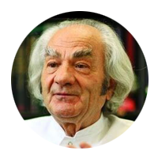
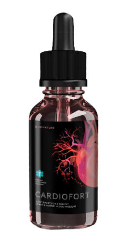

Др. Леон Данайла
Общественный деятель

Мне нравится

Отправить сообщение


нравится 18 889 человек
Др. Леон Данайла
4 февраля 9:05
Отек, боль и мышечные спазмы- это 3 распространённых товарища.
Как лечить их дома? Что является самым большим врагом холестерина и сгустков крови и лучшим другом кровеносных сосудов? Эксклюзивное интервью с легендарным человеком, который сделал чудо!
Ваши ноги отекают вечером? Лодыжки опухли, и на них остаются следы от носков? Это означает, что у вас избыток жидкости в сосудах и эта жидкость проходит через стенки ослабленных и забитых кровеносных сосудов в ткани. Отек сопровождается мышечными болями и судорогами, которые являются результатом нарушения кровотока.
Всем известно, что инсульты и сердечные приступы являются следствием накопления холестерина в кровеносных сосудах. Это является причиной большинства сердечно-сосудистых заболеваний. Тем не менее, мало кто понимает, что это всего лишь верхушка айсберга. Забитые артерии являются причиной 9 из 10 хронических заболеваний, которые считаются неизлечимыми.

Головные боли и повышение артериального давления, трудно повернуть или наклонить шею, ноги отекают вечером, а лицо утром, звенит в ушах, немеют пальцы ног, а руки и ноги замерзают, зрение не сфокусировано, ухудшение памяти, бессилие и слабость - многие считают,что это признаки старения, но это не так.
 Почему кровеносные сосуды отвечают за 90 процентов вашего здоровья?
Почему кровеносные сосуды отвечают за 90 процентов вашего здоровья?
Помимо холестерина, что оседает на стенках кровеносных сосудов?
4 очевидных признака нездоровых кровеносных сосудов и еще 7 скрытых
Как безопасно очистить кровеносные сосуды в домашних условиях?
Я получил ответ на эти вопросы от заведующего отделением сосудистой хирургии Медицинского и фармакологического университета Бухареста, профессора, нейрохирурга, доктора философии. Леон Danaila

Профессор Леон Данаила провел более 19 200 операций на мозге. Самому младшему пациенту было всего два дня.
У профессора Леона Данайлы есть дар объяснять сложные процессы простыми словами. Он написал 68 книг и учебных пособий, которые понятны для людей без медицинского образования. Он убежден, что кровеносные сосуды отвечают за 90% нашего здоровья, и наше благополучие зависит от того, насколько они чисты.
Почему кровеносные сосуды составляют 90 процентов нашего здоровья?
Профессор, Вы неоднократно говорили, что кровеносные сосуды отвечают за 90% здоровья организма. Почему?
Какой орган человеческого тела является самым большим в организме? Мало кто знает ответ. Даже те, кто изучает медицину, ошибаются. Некоторые люди упоминают мозг, печень. Самые умные люди говорят, что это кожа. На самом деле, это сосудистая система.
Мы могли бы обернуть планету 2,5 раза

кровеносными сосудами только от 1 человека
Представьте. Если взять и соединить все сосуды в теле человека, их длина составит около 100 тысяч километров.
Экватор имеет длину 40 000 километров. Таким образом, мы можем обернуть планету 2,5 раза веревкой из сосудов одного человека.
Что вы об этом думаете? Кровеносные сосуды-это не просто трубки, которые перегоняют кровь. Это уникальный и сложный орган, и любое повреждение вызывает негативные последствия.
- Блокировка кровеносных сосудов в ногах - варикозное расширение вен, отек, чувство тяжести, холод или, наоборот, сильное жжение в ногах, сухие и потрескавшиеся подошвы. Нарушение кровотока влечёт исчезновение защиты от бактерий, появляется микоз, ломаются ногти.
- Блокирование кровеносных сосудов, которые питают печень - стеатоз печени. При употреблении жирной пищи во рту появляется горький вкус.
- Ослабленные и заблокированные кровеносные сосуды, которые питают суставы - повреждение хрящей. Боль в суставах, возникает остеохондроз, грыжа.
- Кишечные сосуды теряют эластичность - геморрой.
- Кровеносные сосуды в глазу - зрение ухудшается. Катаракта развивается. Красные глаза, в которых мы виним усталость, на самом деле являются микро-кровоизлияниями, трещинами в небольших капиллярных сосудах в глазу.
- Нарушения кровообращения в мозге - головокружение, шум в ушах и потеря памяти. Вы когда-нибудь ходили на кухню и забыли, что вам нужно? Или неспособность вспомнить слово. Это признаки ухудшения состояния кровеносных сосудов головного мозга.
И, конечно же, гипертония вносит свой вклад в этот список. Высокое кровяное давление - мать инсульта и сестра сердечного приступа
Кровеносные сосуды являются нашим источником энергии, и жизнь течет через них. Если этот важный путь заблокирован, жизнь прекратится.
Закупорка кровеносных сосудов означает голодание всех органов.
Избыточный вес он связан непосредственно с кровеносными сосудами. Кровеносные сосуды, забитые холестерином, вызывают голодание органов и не обеспечивают необходимое количество питательных веществ. Мозг посылает сообщение: вы должны есть. И человек ест. Но органы по-прежнему не получают необходимого количества питательных веществ из-за закупорки кровеносных сосудов. Мозг снова сигнализирует, что вы должны есть, и это повторяется бесконечно.
Отсюда и стойкое чувство голода и сильное желание сладких и жирных продуктов, потому что организму нужны калории.
Когда мои коллеги говорят своим пациентам: "у вас высокое кровяное давление, потому что у вас избыточный вес, они путают причину и следствие. Гипертония возникает не из-за лишнего веса, а наоборот.
Невозможно быть здоровым и счастливым без здоровых кровеносных сосудов.
Вот почему я говорю все время: если вы хотите нормальной жизни, очистите и восстановите здоровье кровеносных сосудов. Очистка сосудов спасет вас от 90% хронических заболеваний, некоторые из которых считаются „неизлечимыми”.
Что забивает кровеносные сосуды, кроме холестерина?
Мы все знаем, насколько опасен холестерин. Он забивает кровеносные сосуды, истончает их, влияя на кровоток, но он не единственный.

6,3 кг
Это общий вес примесей, которые накапливаются в кровеносных сосудах к 55 годам.
Холестерин
Это правда. Холестерин или "атеросклеротические отложения" составляют около 65-70% примесей в сосудах.
В возрасте 50 лет в организме остаются до 5 кг отложений холестерина. Накопление холестерина сужает диаметр кровеносных сосудов в четыре-пять раз.
Эти пластины не угрожают жизни. Качество жизни ухудшается, повышается кровяное давление, возникают головные боли, боли в спине, слабость и апатия. Однако масса сгустков крови, которые накапливаются в кровеносных сосудах, гораздо опаснее.
ВЕС ТРОМБОВ
Масса сгустков крови, накопленных в сосудах, намного меньше - только около 800 граммов - 1 кг .Однако их опасность заключается в нестабильности. Тромб (сгусток крови) может разорваться в любое время и двигаться дальше в кровоток.
Большой сгусток крови полностью блокирует кровеносный сосуд. Возникает ишемия-орган перестает получать необходимые вещества.
Ишемический инсульт является закупоркой кровеносных сосудов в мозге. Сердечный приступ-это закупорка коронарной артерии. Ишемия печени, коллапс легких, почечная недостаточность. Геморрой-это не что иное, как ректальная ишемия. Блокирование мелких кровеносных сосудов в ногах в конечном итоге приводит к некрозу-гангрене ..
ВЕС СОЛЕЙ
Соли кальция в кровеносных сосудах - это химические остатки от лекарств и пищевых добавок. К 50 годам накапливается от 300 до 400 г. Наибольшее количество солей кальция накапливается в кровеносных сосудах мозга. Соли кальция опасны из-за их кристаллической структуры. Внезапное сужение, вызванное стрессом, физическими нагрузками или погодными условиями, приводит к сосудистым спазмам в результате того, что острый кристалл может сломать стенку сосуда. Разрыв мозгового сосуда-это так называемый геморрагический инсульт.
4 очевидных признака нездоровых кровеносных сосудов и еще 7 скрытых
Какие симптомы указывают на то, что наши кровеносные сосуды забиты? Как распознать сигнал организма: срочно очистить сосуды!?
Если вам больше 45 лет, и вы никогда не принимали нутрицевтики для чистки кровеносных сосудов, я заверяю вас, что у вас есть проблемы с ними.
45
возраст, после которого необходимо очистить кровеносные сосуды
Блокировка кровеносных сосудов с холестерином и сгустками крови на самом деле является естественным процессом старения. Нездоровая пища, лекарства, курение и алкоголь ускоряют процесс в 6-8 раз. Это реальность, в которой мы живем, и которую мы не можем отрицать.
Это главный признак сосудистой закупорки.
Если у вас диагностирована гипертония, вы можете перестать искать симптомы, так как она является королевой сосудистых заболеваний.
У вас проблемы с артериальным давлением? У вас всегда высокое кровяное давление, и вам нужно принимать лекарства? Тогда вы должны знать, что только 30% диаметра сосудистой трубки было сохранено. Остальное находится под бляшками холестерина, сгустками крови и солями кальция.

Поэтому даже самый маленький стресс, изменение погоды, магнитные бури сразу же влияют на здоровье - у вас повышается кровяное давление, присутствует сильная головная боль, боль в суставах.
4 заболевания, вызванные закупоркой кровеносных сосудов:
- 1. Гипертония.
- Неустойчивое или высокое кровяное давление, для понижения которого требуются лекарства. У вас была диагностирована гипертония? Сосуды ждут, когда их очистят!
- 2. Варикозное расширение вен
- Уродливые и опухшие вены на ногах, чувство тяжести и боли, отеки. Остаточный холестерин и сгустки крови блокируют венозные клапаны. Постепенно появляются сосудистые” звездочки „, которые в конечном итоге превращаются в сосудистую” сетку". Так развивается варикозное расширение вен.
- 3. Геморрой.
- Закупорка кровеносных сосудов в прямой кишке вызывает воспаление геморроя. И отложения в кровеносных сосудах, которые питают кровь, способствуют анальным трещинам.
- 4. Остеохондроз.
- Плохое кровообращение в хрящах. Хрящи затвердевают и изнашиваются, не успевают восстановиться. Они не регенирируются и не высыхают. Они теряют свои амортизационные свойства. Соли не смываются и накапливаются неконтролируемо
7 скрытых симптомов:
- 1. Отек.
- Vasele de sânge blocate nu pot pompa sânge. Metabolismul soluțiilor saline este afectat. Seara, picioarele sunt atât de umflate încât șosetele lasă urme adânci pe glezne. Față umflată, pungi sub ochi. Inelele nu pot fi scoase de pe degete. Balonarea este un semn de umflare a organelor interne.
- 2. Звон в ушах
- От мягких звуков до громких, которые затрудняют фокус. Это связано с повышенным давлением в сосудах мозга, которое действует на барабанные перепонки.
- 3. Головокружение.
- Чувство "интоксикации", приступы головокружения предполагают, что вестибулярный аппарат страдает от голода. Часто сопровождается нарушениями слуха.
- 4. Бессонница.
- Вы чувствуете сонливость и усталость,но не можете спать до полуночи? Это связано с недостаточностью притока крови в гипофиз. Он больше не производит мелатонин, гормон сна.
- 5. Снижение энергии.
- Вы чувствуете нехватку энергии. Вы не в настроении. Вы просто хотите лечь в постель и поесть. Это происходит, когда организм начинает сохранять энергию. Забитые кровеносные сосуды препятствуют транспортировке необходимых питательных веществ в органы, и организм сводит к минимуму свою активность.
- 6. Визуальные аномалии
- Пятна на глазах, помутнение зрения. Симптомы повреждения глаз.
- 7. Боль в суставах.
- Боль в суставах при изменении погоды. Утром, вместо того, чтобы просыпаться спокойно, вы чувствуете себя полу парализованным человеком с инвалидностью, у вас болят кости. Для облегчения онемения требуется время. Это связано с тем, что синовиальная жидкость теряет свои свойства.
У вас есть хотя бы один из этих симптомов? Ваши сосуды говорят вам, что они нуждаются в очистке и питательных веществах.
Люди часто имеют несколько симптомов в разных комбинациях одновременно. Или даже все сразу.
Пациенты пытаются лечить каждое заболевание отдельно - таблетки от артериального давления, мази от варикозного расширения вен, свечи от геморроя, гели от остеохондроза, и, конечно же, обезболивающие, болеутоляющие, обезболивающие.
Они выбрасывают огромные суммы в фармацевтическую черную дыру. Но причина всех сосудистых заболеваний та же - закупорка. Вы должны начать с общей очистки

Что нужно использовать для очистки кровеносных сосудов от холестерина, сгустков крови и слоев?
Как пациент может помочь? Как он может очистить кровеносные сосуды, если он не хочет идти к врачу и слышать вердикт:” Вы должны похудеть „,” вы должны заниматься спортом „,” вам нужна здоровая пища „,” вы в возрасте, когда это нормально " и т. д.?
Большинство лекарственных и фармацевтических препаратов не помогают, а просто опустошают кошелек и вызывают привыкание.
К сожалению, это медицинская система в Румынии. Я полностью понимаю нежелание пациента обращаться к врачу.
Я могу только рекомендовать продукт для безопасного очищения кровеносных сосудов - Cardiofort. Cardiofort продлевает жизнь на 11-17 лет, заряжает энергией и дарит ощущение легкости. Вы избавитесь от проблем и получите больше силы.
Это 100% натуральные капли, абсолютно безопасные для организма. Эффективность этого средства можно сравнить только с хирургическим очищением сосудов. Но в отличие от операции, это не вызывает осложнений и побочных эффектов. За один курс эти капли интенсивно очищают всю систему кровообращения человека-от крупных артерий до самых маленьких и хрупких капилляров.
Cardiofortсодержит целый комплекс растительных компонентов: боярышник, зверобой, хмель, хвощ, пустырник, липовые цветы. Как только продукт попадает внутрь, он сразу начинает действовать и постепенно излечивает весь организм. Уникальный состав капель устраняет холестериновые бляшки, тромбы в артериях и сгустки крови на стенках кровеносных сосудов, а также бляшки кальция. Таким образом, Cardiofort удаляет шаг за шагом все вредные вещества, которые препятствуют циркуляции крови.
Токсичные вещества, накопленные за годы и отправляющие вашу жизнь будут смыты Cardiofort всего за 1,5-2 месяца лечения.
Всего за 6 недель, Cardiofort растворяет и удаляет 4000 г холестериновых бляшек. Размягчает около 1 кг сгустков крови и выводит 350-400 г солей кальция.
В то же время головная боль и шум в ушах исчезают. Мозг начинает получать достаточное количество питательных веществ для работы со скоростью суперкомпьютера. Мысли проясняются.
- Усиливаются ощущения, начинаете слышать приятные звуки, которые вы никогда не слышали раньше. Слух улучшается, и теперь вы можете услышать разговор из другой комнаты.
- Ароматы становятся насыщенными. Заложенность носа, хронический ринит и аллергии исчезают. Кашель исчезает, дыхание становится гладким и свободным. Свежий воздух, который наполняет легкие, распространяется по телу приятными волнами, вызывая ощущение легкой эйфории.
- Ощущения вкуса сильнее и глубже. Даже обычная еда приносит особое удовольствие. Вы будете меньше есть и насыщаться быстрее. Зависимость от сладкой и жирной пищи исчезнет.
- Суставы скажут вам "спасибо". Больше не будет боли в суставах, и из-за обновления коллагена движения станут более легкими. Это похоже на то, что вы меняете моторное масло на машину: замените черную жидкость, содержащую кусочки металла, свежим, прозрачным маслом, которое обеспечивает идеальную смазку.
Впечатляет. Я знаю только общие факты о нутрицевтиках. В Японии и Израиле питательные вещества назначаются в качестве основного лечения. Однако в Румынии эти продукты по-прежнему рассматриваются с большим скептицизмом.
Я уверен, что многие пациенты уже принимали сотни добавок и таблеток, чтобы не тратить деньги на чудесные продукты с подозрительной репутацией.
Из-за наших сомнений мы часто терпим неудачу, отвергая то, что может нам помочь.
Позвольте мне рассказать вам историю об отсутствии доверия.
В 1928 году был обнаружен первый антибиотик - пенициллин. С ней лечились дизентерия и тиф, которые в то время занимали много жизней.
Но большинство людей не думали, что пенициллин им поможет, потому что раньше они использовали тысячи других средств, которые им не помогли. Те, кто испытал тысячу неудач и не боялся попробовать еще раз, были излечены. И те пациенты, которые поддались идее” другого бесполезного лекарства", умерли, хотя спасение было прямо под их носом.
Так же, как пенициллин остановил вспышки дизентерии, брюшного тифа и пневмонии,Cardiofort устраняет сосудистые заболевания. Корея, Япония, Канада, Швейцария и Израиль уже сделали первые шаги в этом направлении. Перед началом медикаментозной терапии необходимо очистить организм от нутрицевтиков.

В Румынии, с Cardiofort лечат только важные люди: министры, депутаты, знаменитости и т. д. израильские продукты также используются в лечении, что позволяет пациентам быстро получать результаты.
Я согласен с тем, что сомнения-наш самый большой враг, и я не боюсь пробовать новые вещи.
Эффект перекиси (оксигенация) - это ускорение поглощения молекул путем обогащения кислородом.
Растительные экстракты из Cardiofort, насыщенные влагой и кислородом, приобретают эффект перекиси водорода - процесс оксигенации.
Таким образом, молекулы продукта можно сравнить с небольшими баллонами кислорода. Они заставляют строительные блоки холестерина ломаться в кровеносных сосудах и очищать кровоток.
Acesta este motivul pentru care Cardiofort это настолько эффективно, потому что прием живых экстрактов работает активным образом. В то время как большинство продуктов содержат мертвые и неактивные молекулы.
Эффект перекиси обеспечивает немедленное поглощение живых молекул. Кислородсодержащие растительные экстракты легко поглощаются стенками пищевода. Поэтому, Cardiofort не вызывает изжогу, горечь, отрыжку, не раздражает кишечник и защищает желудок. Подходит также для пациентов с язвой желудка.
Cardiofort это букет лекарственных экстрактов, которые гармонично работают, чтобы ваши кровеносные сосуды были чистыми и твердыми.
Удалить избыток
Экстракт боярышника устраняет лишний холестерин. Молекулы боярышника удаляют частицы холестерина, прикрепленные к стенкам кровеносных сосудов. Проход свободен для свободного передвижения. Органы получают питательные вещества. Хрящ восстанавливает свою эластичность, наполняется водой и кислородом, вызывая механизм автоматического ремонта. Исчезает «скрип» при вращении шеи. Колени и пальцы ног перестают болеть каждый раз, когда погода меняется.
Исчезают отеки. Ваши ноги больше не опухают, даже если вы ходите весь день.
Восстанавливается приток крови к коже-исчезают видимые вены. Варикозное расширение вен постепенно исчезает, геморрой высыхает.
Включить питание
Молекулы хвоща захватывают частицы холестерина и смешиваются с ними, превращая их в полезные липопротеины высокой плотности, которые разрушают жиры.
Cardiofort решает две проблемы: устраняет холестерин и стимулирует сжигание жира. Вы начинаете ощущать прилив энергии, желание двигаться, чувствуете, что можете двигать горы.
СНИМАЕТ СПАЗМЫ
Экстракт leonurus снимает вазоспазм, успокаивает и расслабляет кровеносные сосуды, страдающие нарушенным кровообращением. Артериальное давление нормализуется. Головная боль исчезает, шум в ушах уменьшается, а легкие и трахея работают легко и хорошо. Вы больше не почувствуете нехватки воздуха.
УМЕНЬШИТЬ НАПРЯЖЕНИЕ
Экстракт плодов хмеля обнаруживает сгустки крови в кровеносных сосудах и интенсивно разжижает кровь, обеспечивая ее свободное кровообращение через кровеносные сосуды и артерии. Он разрушает сгустки крови, тромбы и даже небольшие аневризмы. Удаляет остатки лекарств из кровеносных сосудов
Давление в груди исчезает, и вы можете легко дышать. Пульс нормализуется. Аритмия и тахикардия больше не будут вас беспокоить,и у вас не будет острой боли в сердце.
Риск сердечного приступа снижается до нуля
УКРЕПЛЕНИЕ КРОВЕНОСНЫХ СОСУДОВ
Экстракты зверобоя и липы действуют как "пластырь" -они эффективно укрепляют и восстанавливают стенки кровеносных сосудов и устраняют все микротравмы. Клетки мозга получают необходимое питание и интенсивно насыщаются кислородом, который надежно защищает от инсульта, улучшает интеллектуальную активность и разъясняет сознание.
Эффект бабочки
Cardiofort это похоже на движение крыльев бабочки, которое создает цепную реакцию, полную невероятных событий. Cardiofort, начиная с поэтапного использования сосудистого мусора, накопленного на протяжении десятилетий, он вызывает цепную реакцию регенерации организма.
1 месяц приема Cardiofort- это как родиться заново
ЛЕГКОЕ ПРОБУЖДЕНИЕ
Утром вы просыпаетесь и встаете с постели легко, не дожидаясь, пока ваши ноги, спина и шея оправятся от онемения.
Утром организм полон энергии и силы, так как кровеносные сосуды полностью чисты, а органы получают пищу и отдых ночью. Все тело правильно питалось кровью и набирало силу на Новый День.
ВКУСНЫЙ ЗАВТРАК
Ешьте кусочек хлеба и масла и омлет на завтрак, и печень и желудок хорошо их принимают. У вас больше нет горечи и резкой боли в животе.Cardiofort очищает кровеносные сосуды, которые питают желудок.
ВОЛНА МОЩНОСТИ
Когда вы выходите из дома, вам не нужно беспокоиться о ногах-они могут легко справиться, даже если вы будете ходить весь день, они не устают и не отекают. Обувь и носки не оставляют следов на ногах.
АБСОЛЮТНОЕ СПОКОЙСТВИЕ
Вы спокойны и умиротворены. Постоянная боль, которая затемнила ваше сознание и не позволила вам сосредоточиться, исчезла. Когда у вас ничего не болит, вы воспринимаете знакомые вещи, звуки и запахи более интенсивно.
МНОГО ЭНЕРГИИ
Даже после тяжелого рабочего дня вы возвращаетесь домой с ясной головой. Мозг работает с точностью швейцарских часов, вы не чувствуете усталости вообще.
КОМФОРТНЫЙ СОН
Как только вы ложитесь спать, вы засыпаете. Не так, как раньше, когда вы смотрели на потолок половину ночи и не могли спать. Теперь это просто-решите, когда вы хотите заснуть, и организм реагирует немедленно.
Программа скидок
- Насколько я знаю, Cardiofortне продается в аптеках. Почему?
- Речь идет о жадности фармацевтов. Менеджеры аптек предложили одно условие-ввести дополнительную плату со счета производителя за каждую единицу проданных товаров. Таким образом, они хотят значительного увеличения стоимости продукта. Просто подумайте-стоимость пакета Cardiofort будет стоить покупателю около 1200 леев. Кто может себе это позволить?
С другой стороны, фармацевтические компании считают, что эта цена оправдана, поскольку пациенты должны следовать только 1 курсу Cardiofort каждые 5-7 лет. Кроме того, после чистки сосудов им больше не нужны лекарства, которые нужно принимать много лет! Таким образом, спрос на многие фармацевтические препараты резко упадет, а аптеки понесут убытки.
Производитель Cardiofort не заключил соглашения с аптеками, и капли продаются только в интернете. И это правильный выбор! Производителю не придется платить арендную плату или платить наценки в аптеках, чтобы получить возможность вывести продукт на рынок. В свою очередь, пациенты могут приобрести Cardiofort при значительно более низкой стоимости. Это означает, что капли доступны для большего количества людей!
Программа скидок " чистые сосуды”
Наш институт в сотрудничестве с Университетом медицины и фармакологии, а также производителем Cardiofort в рамках проекта телемедицины (онлайн-лекарства) они запустили программу скидок.
Любой, кто хочет участвовать в программе, может получить Cardiofort по новой сниженной цене только 128000 pesos.
Что вам нужно сделать для участия в программе?
Чтобы заказать Cardiofort через программу скидок необходимо выполнить следующие условия:
Условия покупки Cardiofort в рамках программы:
-
Заказать Cardiofort для личного использования.
Закажите продукт для себя, своей семьи или друзей. Мы не имеем дело с посредниками, которые хотят купить партии Cardiofort для последующей перепродажи по более высокой цене.
-
Использовать официальную форму заказа
Официальная форма заказа гарантирует цену производителя и защищает вас от посредников.
Как долго продлится программа скидок?
До окончания текущего запаса Cardiofort. Это означает, что примерно через 3-6 недель. Хотя нет рекламы на телевидении и радио. Пациенты, которым помогло
Последний день скидок на Cardiofort , по этой причине я рекомендую вам сделать заказ на Cardiofort как можно скорее. Программа не будет повторяться в этом году.
Оценить
Комментарий
Распределить

2783
Ispir Elena
Я использовала эти капли в прошлом году, и тогда они стоили гораздо больше, чем сейчас. Честно говоря, мне не жаль! Хотя цена была высокой, я сэкономил на других лекарствах. И я чувствую себя так хорошо, что деньги больше не имеют значения! В 46 я чувствовала себя старухой. Я всегда принимала таблетки, думала, что не доживу до выхода на пенсию, у меня часто были головные боли, я думала, что мне лучше умереть... Но с этим продуктом я забыла о гипертонии через 2,5 месяца, чувствую себя молодым и здоровым человеком (надеюсь, вы понимаете, о чем я говорю)! Поэтому покупать его стоит даже по обычной цене, вы не пожалеете! Мне кажется, что Cardiofort будет запрещен в ближайшем будущем, поскольку слишком много фармацевтических компаний останутся в убытке.
Недавно
Loredana
Cardiofort
- лучший продукт! Сначала я взяла Панагин, затем Фависан. Я знаю, что эти лекарства переоценены. Но мне не нравится ходить к врачам, и я подумала, что моя проблема была не такой серьезной. Я принимала их время от времени, когда у меня было высокое кровяное давление и боль в груди. Но через некоторое время они перестали помогать. Наконец я консультировалась с врачом, и он рекомендовал
Cardiofort
(он был молодым специалистом, одним из тех людей, которые считали, что аптека должна помогать людям и не брать от них столько денег!). Кардиофорт помог мне с первого дня, артериальное давление сразу же снизилось, но я продолжала принимать его, как предписал мне врач. Через 3 недели я полностью забыла о гипертонии. Я вылечила варикозное расширение вен, которые мучили меня 11 лет! У меня были проблемы с гинекологией, которая тоже исчезла. Я чувствую себя прекрасно!
54
Недавно
Moise Simona
Лоредана, спасибо за подробный обзор продукта. Только из личного опыта вы можете быть уверены, насколько эффективен конкретный продукт. Мне удалось купить со скидкой.
81
Недавно
Claudia
Что сказать, Я всегда восхищался людьми, которые живут за счет других! У меня такое чувство, что мы все им обязаны! Когда я поняла что мне нужен
Cardiofort,
я не стала долго размышлять! Я сразу же одолжила деньги и купила! А некоторые жалеют и ждут скидок! Позор!
90
1 дня назад
Mihaela
Клаудия, ты не должна осуждать других. Вы не знаете их позиции! Возможно, они инвалиды и не могут работать. Где я могу взять деньги, чтобы погасить долг?

Недавно
Miron Alina
В последнее время мама жаловалась что ее пальцы онемели, и ее подруга, врач, посоветовала ей очистить кровеносные сосуды. Я случайно узнала о
Cardiofort.
Я сразу купила эти капли. Очень скоро мы заметили первые положительные результаты, в течение нескольких дней цвет ее кожи изменился, внешний вид ее волос, ногтей и общее состояние ее тела значительно улучшились, а через 15 дней ее пальцы практически перестали онеметь. В течение полутора месяцев онемение полностью исчезло, и давление вернулось к норме. Она чувствует себя намного лучше, энергичнее, память улучшилась, суставы не болят даже в плохую погоду.
1

1 дня назад
Andrei Maria
Я купила Cardiofort сразу из-за перенапряжения, потому что каждую ночь меня мучали головные боли, и обезболивающие не помогли. Позже я узнала, что боль была вызвана гипертонией. Бывший коллега рекомендовал мне Cardiofort, у меня получилось купить его со скидкой. Через 2 месяца я стала совершенно другим человеком! Затем я поняла, что на самом деле я не жила, пока не очистила кровеносные сосуды! Голова перестала болеть, варикозное расширение вен пропало. И самое лучшее и самое главное, что я похудела на 22 кг! От 100 до 78 кг! Причина в нормализации артериального давления! Теперь я могу рекомендовать Cardiofort всем!

2 дня назад
Cosma Diana
Мария, Ты прекрасна, потому что не сдаешься и заботишься о своем здоровье! Мне не нравится ходить к врачу, они обычно назначают дорогие лекарства или такие, которые я не могу нигде купить (я помню, как искала глазные капли, но нигде в городе их не продавали). Что я могу сказать, врачи не пытаются справиться с основной проблемой. Мои пальцы часто немели. Благодаря вашим отзывам я попробую сейчас Cardiofort. Даже если онемение по другой причине, очистка сосудов не повредит! Ведь это натуральный продукт, он имеет множество преимуществ. Спасибо!
5

2 дня назад